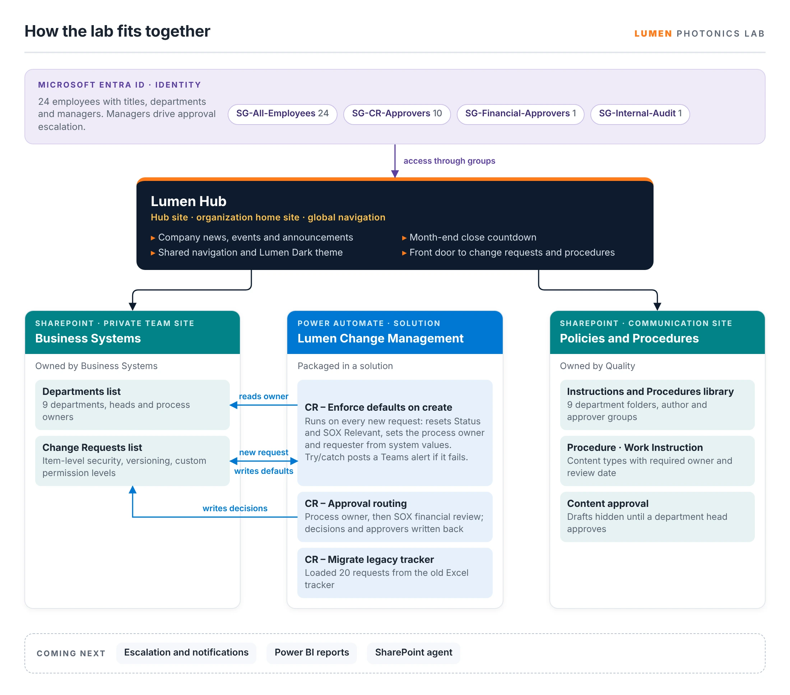
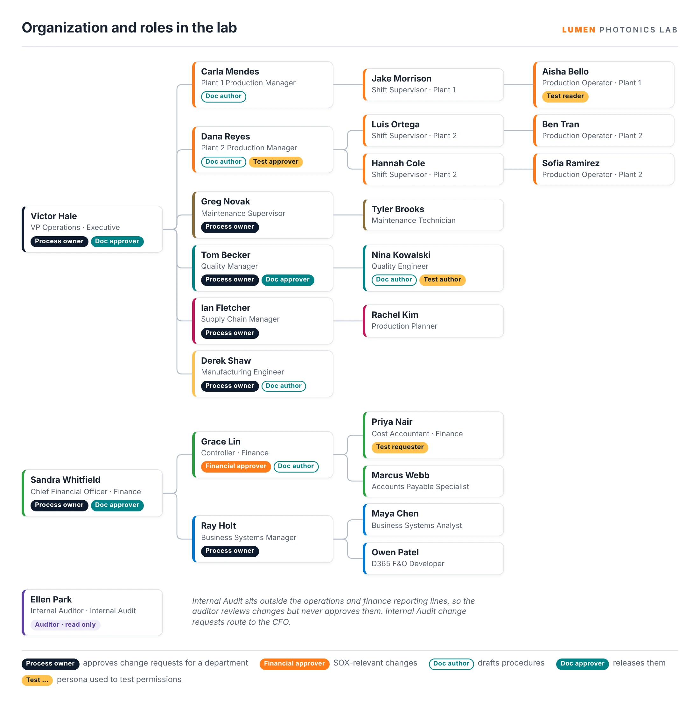
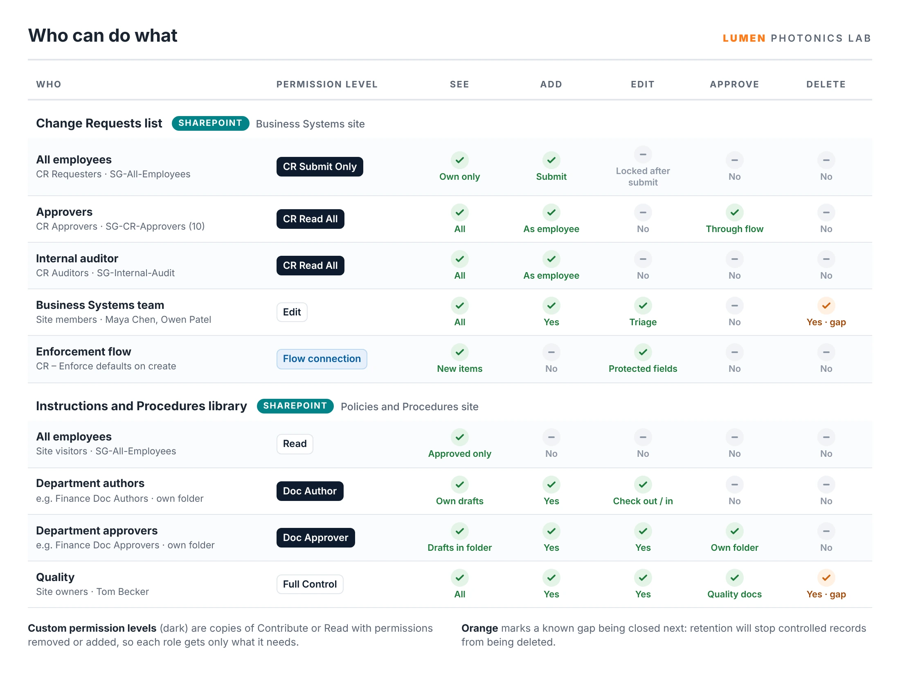

SharePoint · Power Automate · Power BI · Entra ID · SOX and ISO controls
What this lab shows
A complete business systems environment for a fictional fiber laser manufacturer, built from an empty Microsoft 365 tenant: people and roles, sites and permissions, automated controls and controlled documents, each one tested by signing in as the employees who use it.
Why I built it
Business systems roles in manufacturing ask for SharePoint administration, Power Platform automation and experience with SOX and ISO controls. Those are hard to show with a single app, so I built a company to practice on: Lumen Photonics, with a headquarters and two plants, real reporting lines and the reference data an ERP would expect. Every control below was tested by signing in as the person it applies to, not as the administrator.

The Parts
Each part has its own page focused on one approach or skill. They were built in this order.
| # | Part | What it shows | Platform |
|---|---|---|---|
| 1 | Building a Test Company | Master data first, then scripted, repeatable loading: bulk user import, Graph PowerShell managers and a solution-aware migration flow | SharePoint · Entra ID |
| 2 | Change Request Controls | Least-privilege permissions that enforce a SOX control, tested as each role | SharePoint |
| 3 | Lumen Hub | A hub and home site that gives every employee one front door, without opening private sites | SharePoint |
| 4 | Change Request Enforcement | A flow that resets protected fields on every request, with try/catch alerts so the control can't fail silently | Power Automate |
| 5 | Document Control | ISO-style procedures and work instructions: content types, approval before release, drafts hidden from operators | SharePoint |
| 6 | Change Request Approval Routing | Two-stage approval routed by role, with SOX financial review and segregation-of-duties checks | Power Automate |
| 7 | Change Control Dashboard | A Power BI report on approval speed, request aging and SOX control checks, built from the change request history | Power BI |


Controls Built In
Skills Demonstrated
SharePoint site architecture, hub and home sites, permission design with custom levels and groups, item-level security, content types and site columns, content approval and versioning, Entra ID users, groups and managers, Microsoft Graph PowerShell, Power Automate cloud flows with approvals and error handling, solution-aware ALM, Power BI reporting with DAX, and SOX- and ISO-aligned control design.
Explore the Lumen Photonics lab